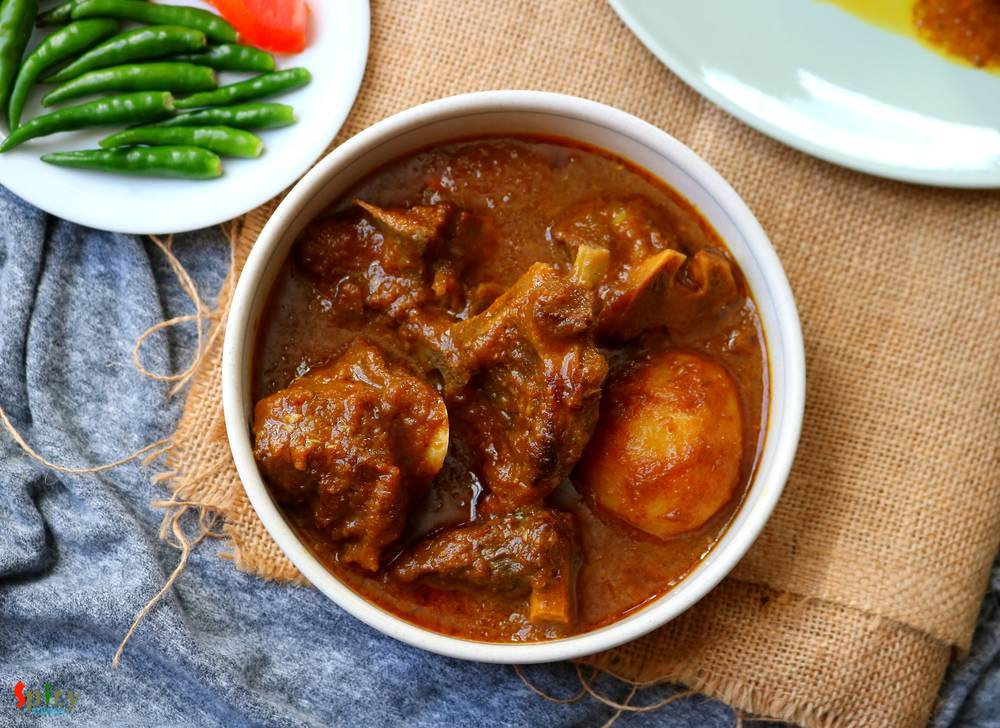
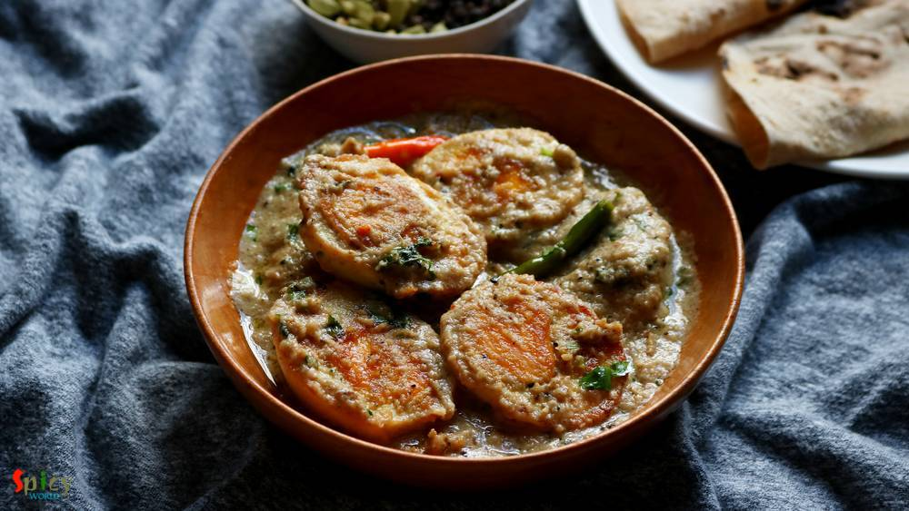
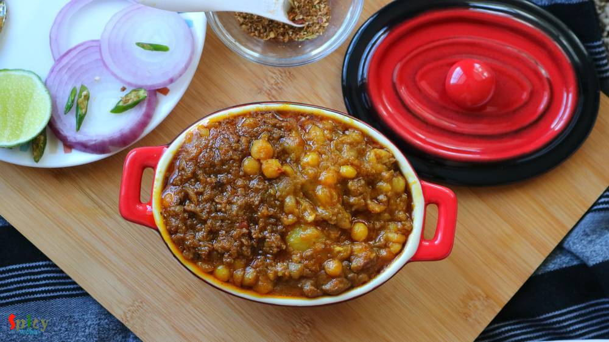
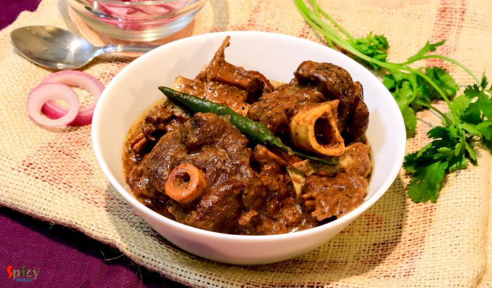
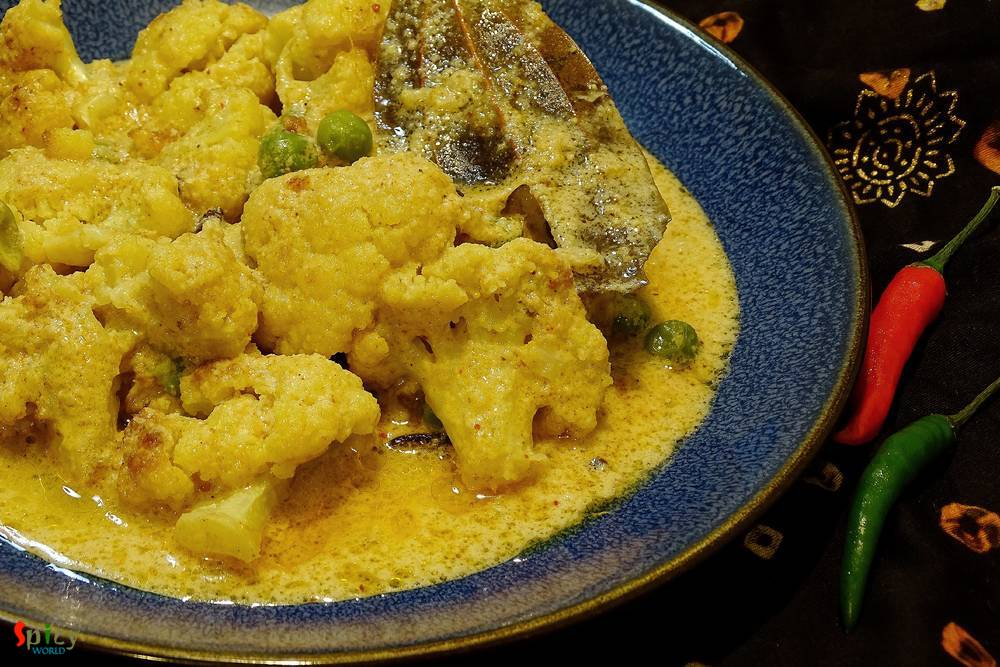
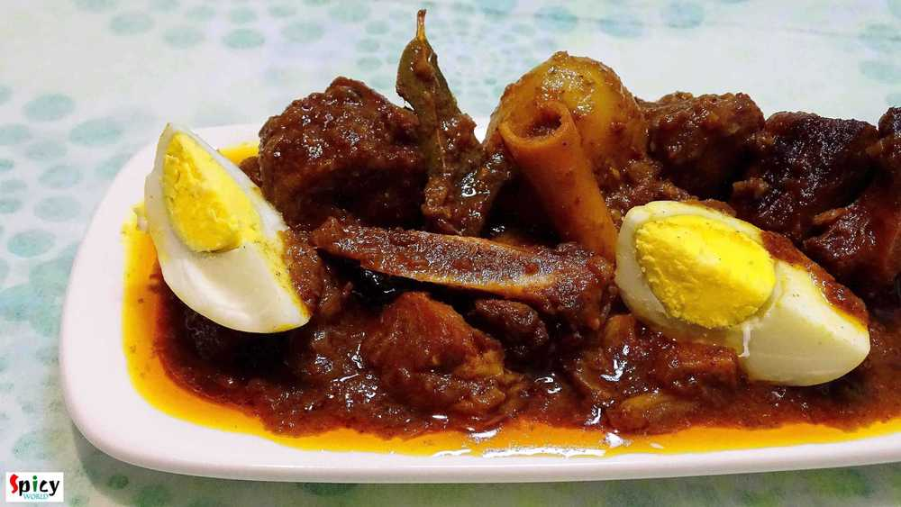
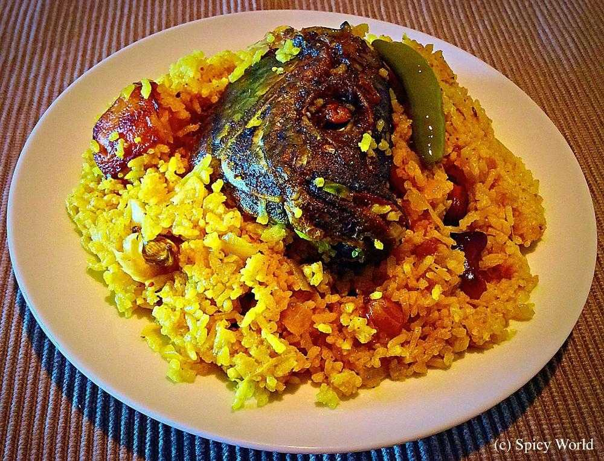
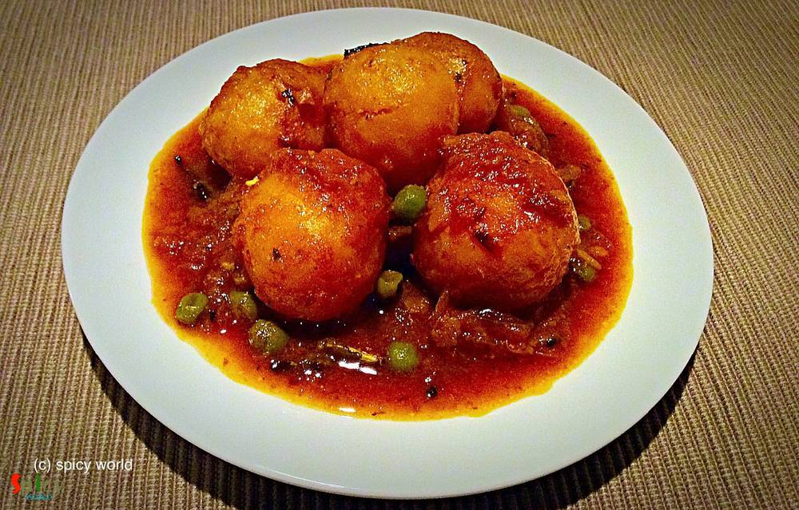

Simple and Easy Recipes
Posts on 'bengali'

Veg Recipe
Apr 2, 2019
Chanar Payesh is a traditional Bengali dessert recipe in which soft, crumbled panner will be cooked in semi thickened milk along with condensed milk and green cardamom. The texture of Chanar Payesh is very important - neither too thick nor too thin. In one word this Payesh tastes delicious and more over it is very easy to make. During summer, when you want to make some cold, lightly sweetened dess ...


Veg Recipe
Mar 26, 2019
Can you imagine summer without mango? Mango is one of my favorite fruit with which you can make so many things like Yogurt, Ice cream, Phirni, Kheer, Cake, Cheesecake and what not. This season I made Mango Sondesh, taste and texture came out really good. You can make them with Ricotta cheese also, in that case add some milk powder as ricotta cheese is much thinner than Paneer. Mango pulp is going ...

Nonveg Recipe
Mar 22, 2019
We all know what Kofta is. Kofta is almost like meatball but it is deep fried and light in weight. Last weekend one of my friend came over for dinner with her family. I cooked few dishes, one of them was this Fish Kofta Curry. Deep fried Fish balls will be cooked in a rich and creamy sauce. I got very positive feedback from everybody. Fish Kofta curry tastes awesome with fried rice, plain steamed ...

Veg Recipe
Mar 19, 2019
Paneer Bhapa is a very easy and flavorful Bengali veg dish which goes best with steamed rice. Bhapa means steamed. Any spicy bhapa dish like Chingri bhapa, Ilish bhapa etc will call for two important ingredients - Green chili and Mustard oil, without these two 'bhapa' will taste bland. In this Paneer Bhapa recipe, paneer will be steamed in mustard, poppy seeds, coconut and yogurt gravy within a st ...

Veg Recipe
Mar 11, 2019
You can find so many variety of Chum Chum recipe on internet. They all taste good, I can assure you that. Today what I am going to share is Kolkata special 'Lord Chom Chom' sweet recipe, in which cylindrical shaped Paneer will be cooked in sugar syrup then they will get a good coat of thick Malai (thickened milk) and Mawa (dried milk). In one word Chom Chom = a piece of heaven. Trust me I am not k ...

Veg Recipe
Mar 2, 2019
Doi Potol is a traditional Bengali vegetarian delicacy. Potol is pointed gourd or parwal. In this recipe pointed gourd will be cooked in a spicy and tangy yogurt based sauce. I didn't use onion and garlic in this, but you can if you wish. Doi Potol goes best with plain steamed rice. I kept the recipe very simple and easy. Do try this in your kitchen and let me know how it turned out for you.

Veg Recipe
Feb 18, 2019
Rosogolla is cottage cheese balls cooked and soaked in suger syrup. Rosogolla is a Bengali delicacy. You will get so many flavors of them in Kolkata sweet shops, like Nolen gur / Rose / Mango / Strawberry / Paan / Cardamom and what not! But one of my favorite is Sponge Rosogolla which is plain and simple. They are literally light and soft like sponges! If you follow every tips of this recipe you w ...

Nonveg Recipe
Jan 17, 2019
Sunday mutton curry is a super easy, fuss free goat meat recipe which goes best with plain rice. This mutton curry is my family favorite and almost every sunday they demand to have it on lunch. And in the evening, my husband silently ask me is there any left over from lunch so that we can have it with roti at dinner? Yes, this sunday mutton curry is really close to our heart and we love it to the ...

Veg Recipe
Jan 7, 2019
Koraishuti means green peas and Koraishutir Kochuri is not just a food, it is an emotion for a Bengali. According to me, winter is incomplete without 'green peas'. Am I right ?? We Bengalis love to eat 'koraishutir kochuri' during winter. In my home nobody brings this kochuri from shops. My mom always makes this at home with 'aloo dom' , 'payesh' and everybody loves it. Nowadays we don't need to w ...

Nonveg Recipe
Jan 4, 2019
Dahi chicken is a very simple yet delicious chicken curry which goes best with roti or plain chapati. Dahi or Doi means plain full fat yogurt. This dahi wala murgh has a delicious thick white colored yogurt and onion based gravy. Well, I prefer white colored doi chicken, if you like colorful then add some turmeric powder and red chili powder, rest of the recipe will remain same. You will get very ...

Nonveg Recipe
Jan 1, 2019
In Bengal, one of the famous street food is 'dimer devil'. Dim means Egg in Bengal. Nowadays, 'egg chop' is also served in many party, get to gather and occasions. To make this you have to wrap a boiled egg with spicy potato filling, roll them in bread crumbs and then deep fry them. In college canteen or any ceremony, sometimes the cook mix some minced mutton (keema) with the spicy potato, the tas ...

Veg Recipe
Dec 7, 2018
In Bengal, we enjoy our winter with some signature food and sweets. One of the popular sweet is Nolen gurer Sondesh. Nolen gur is Date Palm Jaggery which is a very fragrant variety of Jaggery. Be it Gurer Rosogolla or Sondesh any Bengali can die for them. I kept the process very simple. So, go ahead enjoy the recipe with video and make them in your kitchen as soon possible.
")
Nonveg Recipe
Dec 14, 2018
I am a very fast food loving person. During college life there was hardly any day I skipped fast food. Be it simple 'phuchka' (panipuri) or heaviest roll, I was always in ! Surprisingly after my marriage I have taken a lot of control over my food habit, I have become more conscious now. But that doesn't mean I can't eat fast food once in a week .. hell I can ! ?? When I made these yummy 'egg chi ...

Veg Recipe
Nov 26, 2018
'Payesh' / Rice pudding is a very common dessert in Bengal. Having payesh on any occasion is considered as a good sign. Nolen gur means Date Palm Jaggery which we get during winter season. The aroma and color of Nolen Gur is phenomenal. Sweet shops sell so many variety of sweets with date palm jaggery like - Gurer Rosogolla, Gurer Sondesh, Gurer Patisapta and what not! Payesh needs babysitting, as ...

Veg Recipe
Jun 29, 2018
Shukto is an emotion for a Bengali. Its a medley of bitter and sweet. The authentic Shukto recipe has no use of chilies. You can add various kinds of vegetable of your choice. Shukto is a must lunch item in Bengali weddings / functions. Now what is wedding style Shukto?? Well, its more creamy, more rich in flavor. If you can follow each steps of this recipe then you will get why I named it 'biyeba ...

Veg Recipe
Nov 19, 2018
Aloor Dom is a very good old Bengali recipe which can never go wrong with anything. You can serve this Bengali style dry Potato curry with Luchi / Porota / Kochuri / Pulao / Fried rice and what not. It tastes heavenly. I made Lachha Parathas to go with it. The recipe of Aloor dom is very easy in which potatoes will be cooked in onion tomato based gravy along with a special ground masala and yes, t ...

Nonveg Recipe
Oct 31, 2018
Egg Malai Curry is a Bengali delicacy, in which hard boiled eggs are cooked in a creamy milk based sauce. Dimer Malaikari is a very rich and mild curry which goes best with plain steamed rice or ruti. This is a kid friendly recipe, adjust the heat level according to their taste. They will enjoy this preparation to the core, I can vouch for that. If your family love egg, then you have to give this ...

Nonveg Recipe
Oct 4, 2018
I made this Kosha Chingri Macher Kalia last weekend with some steamed rice and curry leaves tempered musur daal. He finished the lunch (read there wasn't any meat curry, not even leftover) with a big smile, that too on weekend. This spicy prawn curry worked like a magic. So, I had to share with you all the recipe of this Bengali delicacy - kosha chingrir kalia. Though the word 'kosha' suggests slo ...

Nonveg Recipe
Oct 2, 2018
Mutton Kosha is a Bengali delicacy which can be served with plain rice / basonti pulao / luchi. Mutton kosha requires patience, kosha means slow cooking in oil and spices. Off course to hurry up the process you can use pressure cooker, but slow cooking is recommended and this mutton curry like any other curry tastes better on next day. We have one more variance of the Mutton Curry called Kosha Man ...

Veg Recipe
Sep 25, 2018
Paneer Kathi Roll is loved by both vegetarian and non vegetarian people all across India. Paneer Frankie or roll is nothing but stuffed wrap, cooked paneer cubes with some onion slices and green chutney will be stuffed inside a cooked flour paratha. It will be easy for you if you divide the recipe in 3 parts - making stuffing, making paratha, assembling the rolls. You can serve this as evening sna ...
")
Veg Recipe
May 9, 2016
Every family has their own breakfast story. In Bengali households, 'luchi' is the common one. Sunday mornings are meant for 'luchi - torkari'. I was never a breakfast loving person, still not. Actually for me the toughest thing is time management in the morning, always hullabaloo ! But my husband is a huge fan of 'luchi' or 'kochuri', so I have to make it once or twice in a week. I have already sh ...

Nonveg Recipe
May 23, 2016
Last week I was thinking that my blog doesn't have the recipe of 'mangsher ghugni' and being a Bengali I felt very awkward. There is no Bengali in the world who doesn't know about this dish ... yes, 'mutton ghugni' is that much famous. On special occasions or guest's arrival in evening, 'mangsher ghugni' is a very common item we Bengalis make. It's a Indian version of 'chili'. We make the curry of ...
 Pulao / বাসন্তী পোলাও / Holud Pulao / Mishti Pulao")
Veg Recipe
Aug 10, 2018
This is a traditional bengali dish. 'Basanti' means yellow colour. You can also call this Sweet (mishti) Pulao. My mom make this in many gatherings along with Macher Kalia or Mutton Kosha. I have literally no words about the combination. This is the must combination 'he' wants on his birthday. But once we had this with Chicken Dopyaza (already on blog) and that combo was also so good! Give it a tr ...

Veg Recipe
Aug 27, 2018
A cup of tea and some vegetable cutlets .... do you need anything more to spend a winter or rainy evening ?? I am always up for this kind of evenings. These cutlets are very much available in Kolkata. I guess, almost nobody makes vegetable cutlets at home in Bengal. On any occasion or just to enjoy some snacks, these chops were always bought from 'telebhajar dokan' / fast food center in my home. B ...

Nonveg Recipe
Jun 13, 2016
We, Bengalis, love to eat fish in many forms. One of the popular snack of West Bengal is 'macher chop'. Spicy crumbled fish inside and crispy coating outside - scrumptious !! We both usually enjoy this snack in the evening along with a cup of tea or with a can of beer. Both combos are unbeatable. If you have to impress any Bengali ever in your life, just indulge him/her in 'Bikeler adda' (evening ...

Nonveg Recipe
Jul 5, 2018
In Bengal, one of the common non-veg curry is 'chicken kosha'. I think everybody is familiar with this name. Kosha / Bhuna is a process where you have to cook the meat with spices on medium - low flame in its own juices, if it gets dry then only add water as less as possible. It requires time but with chicken you can make it within an hour. One can make the same curry with mutton, potato, egg etc. ...

Nonveg Recipe
Jun 25, 2018
This green chili mutton has become very popular nowadays in Bengali restaurants in Kolkata. They make this dish with chicken also. After reading the ingredients you will wonder why spinach leaves? 6 blanched spinach leaves wont spoil the taste, rather it will give the curry a nice green color. Heat will only come from green chilies that's why there is no use of dry red chilies in this recipe. It's ...
")
Nonveg Recipe
Mar 14, 2019
Chicken Bharta was prepared last weekend in our lunch. The recipe is Punjabi inspired Bengali dish. A very tasty shredded (pulled) chicken preparation which is famous throughout India. It has onion and tomato based gravy with beautiful flavor of kasuri methi and Garam masala. Of course, how can I forget about the Boiled Egg? To make an excellent Chicken Bharta you have to finish it off with boiled ...

Veg Recipe
May 31, 2018
"Doi" is a very popular dessert among Bengalis. But "bhapa doi" is a very traditional Bengali dessert. My grandma used to make this in pressure cooker and it tastes super delicious. My 1st compliment on this dish was "Bengali Cheesecake" from my man :) .... So, please try this and impress your family members.

Nonveg Recipe
May 8, 2018
'Aam Kasundi' / Mango Mustard relish : the name itself is enough to make anyone's mouth watery, isn't it ? This delicious recipe of Chingri Mach (prawn) requires minimum time and effort to achieve its best taste. Fry everything in mustard oil and make a paste out of it ... perfect for summer ! Nobody likes to be in the kitchen for long in this hot weather. So go ahead, give this simple recipe a tr ...

Veg Recipe
May 3, 2018
Summer is here and so are the mangoes. Yesterday I went for grocery shopping and market was filled with raw mangoes (kancha aam). Off course I bought few and immediately a request came from him : can we have 'aamer chutney' tomorrow?? So, before thinking of any other recipes with raw mango I had to make this Bengali style Mango Chutney. The recipe is our family favorite. This version of mango chut ...

Nonveg Recipe
Aug 8, 2016
We both adore almost any type of mutton curry. I think, once in a week, mutton curry is must for every Bengali households. I made this curry with some plain roti / chapati in dinner last month, just didn't get time to post. Now finally I am sharing this yummy recipe with you all. If you love the strong flavour of black pepper, then believe me, 'morich mangsho' is worth giving a try. I am sure your ...

Nonveg Recipe
Aug 16, 2016
Yesterday I experienced the worst ... my camera's memory card got corrupted and I lost more than half pictures of this recipe. We tried very hard to recover those photos but no luck!! It was nobody's fault, it's just that the tiny little piece of 'card' betrayed me ??? very harshly .. and I felt tremendously helpless towards 'technology'. Now you guys know why there is no step by step pictures ...

Veg Recipe
Aug 11, 2016
Chanar Dalna is a very hearty vegetarian preparation with simple ingredients. My mom used to serve this curry with 'Luchi' and the pair was heavenly. 'Chana' means curdled milk or homemade paneer and 'Dalna' means curry. Both of them are Bengali words. You can definitely make this dalna on any puja / vrat days as they are onion and garlic free. I have already shared 'chanar kalia' recipe with you ...

Nonveg Recipe
Jul 22, 2016
During monsoon or winter or whenever you are down with cold and flu, this 'chicken stew' is the perfect dish to bring back the taste of your tastebuds. I am sure lots of Bengalis will relate to this dish. The slight heat from black pepper and saltiness of butter is the main attraction of this item. This stew is very healthy and home style as you can add many veggies of your choice. The recipe is s ...

Nonveg Recipe
Jul 18, 2016
There are so many fish curry recipes in Bengali cuisine which calls for 'mustard' / sorshe, but this particular item is a jewel because you can cook this in microwave within 5 minutes.Yeaah you read it right ! With some steamed rice this 'sorshe chingri bhapa' tastes best. If you are a shrimp lover and also don't know about this dish, then trust me and give it a try ... you can thank me later !

Nonveg Recipe
Jul 8, 2016
This particular recipe calls for 'bombay duck fish' / loitta maach, but we couldn't get fresh bombay duck here, that's why I used rohu. 'Macher Jhuri' is nothing but a dry preparation of crumbled / mashed fish, which is typically bengali and goes best with steamed rice. Don't forget to add cubed potatoes because without them this curry will be totally incomplete. Try this easy recipe in your kitch ...
")
Nonveg Recipe
Apr 27, 2016
Bengalis love fish. We can eat fish in many forms like thick curry (kaliya), thin curry (jhol), batter fried, shallow fried (mach vaja), steamed version (vapa) and so on. One of the popular among them is 'fried fish'. Now in this category also we have so many variations. The most simple one is shallow fried marinated (with salt and turmeric) fish and the complicated one is 'Fish Roll'. In this rec ...

Veg Recipe
May 19, 2016
If your milk gets curdled, don't throw away, you can do a lot with it. Well, it's bengali style 'chanar kalia' where plain curdled milk / cheese balls are first deep fried and then cooked in a tomato based gravy. It's a vegetarian delicacy of Bengali cuisine. The dish tastes awesome and goes best with plain basmati rice. In any puja or special occasion, we make this dish and it always becomes the ...

Nonveg Recipe
Apr 18, 2016
The name sounds odd ? Well, I am not crazy, we call this mutton curry vegetarian because it has no onion and garlic. The food we usually offer to our god / godess is called 'bhog' which never contains onion and garlic. During 'kalipuja' or diwali, we Bengalis make this vegetarian mutton curry with the meat of 'pathaboli' (ritual). The taste of this curry is suprisingly delicious, even if there is ...

Veg Recipe
Apr 13, 2016
This is a very typical Bengali veg dish which you can only enjoy with steamed rice. We, bongs, have a very strong connection with 'posto' / poppy seeds and 'shorshe' or mustard seeds. We can creat so many delicious items with these two simple things. Now, 'he' is not a fan of eggplant, except fried version, to feed him this particular vegetable is really painful. I always have to make special dish ...

Nonveg Recipe
Apr 4, 2016
Cooking fried kofta / balls in a rich gravy is an old school Bengali delicacy. I guess everybody loves to eat fried balls made with paneer, vegetables, chicken, fish, mutton etc, but after soaking them in a flavouful gravy they become scrumptious. I had some fish fillets in my fridge and couldn't find any better idea than this to use them. Process of making 'Kofta Curry' is tricky and little bit o ...

Veg Recipe
Mar 21, 2016
I have seen two types of cauliflower's roast curry from childhood, my mom makes the yellow + spicy version and the other one is white + sweet version. Both of them are my favourite but today I am sharing the recipe of second version because I have already shared a similar as 1st one cauliflower curry in my earlier post. So, in Bengal this cauliflower white curry becomes very popular during festiva ...

Nonveg Recipe
Mar 16, 2016
If fish is the right hand of our cooking, then 'kochuri' must be the left hand. Both of them are quintessential part of Bengali cuisine. Almost every weekend our breakfast has to be 'luchi' or 'kochuri' and on special day or maybe on guests arrival 'stuffed pooris' are inevitable. In this recipe soft and flaky pooris are stuffed with spicy, crumbled fish filling. After one bite, you can't resist y ...

Nonveg Recipe
Mar 15, 2016
This prawn curry is a family recipe and my mom-in-law is an expert of making it. It's a very common fish curry in Bengali households. We love to eat prawns in many forms, but his favorite is this one. I would suggest you to make this dish with small prawns, you will get much more flavours. First I fried the prawns, potato and cauliflowers, then cook them with gravy. Plain rice will go very well wi ...
")
Nonveg Recipe
Mar 8, 2016
There is a fast food center in Chandannagar, named 'robi fast food center', to me he is the best fish fry maker. As my school was in Chandannagar, I know more shops of there than Chinsurah. There are actually two famous shops - 'bolai' is famous for 'chicken pokora' and 'robi' is famous for 'fish fry'. He always make them in front of you, deep fry them in hot oil and then serve those fries with sa ...

Nonveg Recipe
Mar 4, 2015
Traditional Bengali lunch on sunday is this mutton curry along with plain rice, raw onion chunks and green chilies. After lunch we need a long nap (bhaat ghum). There was a say that we Bengalis can not eat food without potato. This is true. You have to add potatoes to this dish because there are many people like me and my husband who likes potatoes more than mutton pieces specially in this curry. ...

Nonveg Recipe
Mar 3, 2016
We bengalis usually eat 3-4 items with rice in lunch. Yess, its the family tradition in every household in Bengal. Whereas in USA, either it's lunch or dinner, I always make one curry with rice or roti. Sometimes I wonder how our moms, grand mas and mom-in-laws gets time to cook so many items. 'Doi Maach' is an another tasty bengali fish curry which goes very well with steamed rice. It's a classic ...
 / Cauliflower Fritters")
Veg Recipe
Feb 8, 2016
We Indians are crazy about 'pakore' .. don't you think so ?? We make fritters out of almost everything - 'potato', 'eggplant', 'okra', 'cabbage', 'chili', 'lentils', 'chicken', 'fish' and so many more ?. 'He' adores only two vegetables in his life, one is potato and the other one is cauliflower. You can impress him with any type of cauliflower dish. So, is there any doubt about what I'm talking a ...

Nonveg Recipe
Jan 27, 2016
We both are not frequent egg eaters, but when we do, we try to make the curry yumm yumm !! One of our favourite egg curry is 'sorshe dim posto'- traditional bengali dish. 'Sorshe' means mustard seeds and 'posto' means poppy seeds. Lunch dishes always plays a big part in Bengali cuisine. There are several typically bengali dishes which you can only enjoy as lunch with steamed rice and may be after ...
 / Kosha Mangsho (Thakurbari style)")
Nonveg Recipe
Jan 26, 2016
'Thakurbari' means Rabindranath Tagore's home, which is situated at Jorashanko, Kolkata. Tagore's family is popular for many things and one of them is 'cooking'. Nowadays, you can watch plenty of cooking programmes in TV, but when I was in school, only few magazines used to publish cooking recipes on weekends only. The craze was also different in that time. I still can remember how my mom and gran ...

Nonveg Recipe
Jan 26, 2016
Its winter, the season of colourful veggies... One of my favourite veggie is 'green peas' / Koraishuti. You can make so many items with these tiny green balls like, 'matar paneer', 'peas kachori', 'dum aloo with peas', 'khichdi', 'veg daal', 'cabbage curry with peas' etc. But 'fish curry with green peas paste' may seems new to somebody. Its nothing but a dry fish curry with a tasty extra addition ...

Nonveg Recipe
Jan 20, 2016
Few days before I saw a fantastic picture of mutton curry in facebook. The caption was 'adabata aar kacha lonka diye mutton'. After seeing that picture, I decided to make it on dinner with some steamed rice. As the picture didn't provide the detailed recipe, except ginger and green chilies, I followed my own instinct while making the curry. After finishing, I got a thin, flavorful, tasty gravy and ...

Nonveg Recipe
Jan 19, 2016
As I am Bengali, my favourite fish curry is this one. My husband is also a huge fan of fish and specially this curry. It goes best with hot plain rice. This is a very easy process and the recipe is pretty simple. Try this in your kitchen and let me know how it tastes.

Veg Recipe
Jan 14, 2016
Spring is coming my friend, spring is coming. In Bengal we celebrate 'makar sankranti' and I know that every part of india celebrates the same festival with different name and food. From childhood, I love this festival. My grandma and ma makes so many varities of food like 'pithe', 'dudh puli', 'bhaja pithe', 'soru chakli', 'ashke', 'patisapta', 'kholachi' etc with their love and affection. Each a ...

Nonveg Recipe
Dec 23, 2015
'Dakbanglow' means roadside resting house. Travelers used to take rest or halt for a night in those houses. The care taker of those 'bunglow's cooked this curry for their guests. Nowadays these kind of recipes are almost lost but in a few restaurants in Kolkata you can still find this dish. This is a typical bengali recipe and the tastiest dish ever. Once I ate this curry in my aunt's house and I ...
 / Kolaier Daal")
Veg Recipe
Dec 15, 2015
Soul food means the food which you can enjoy from the bottom of your heart while eating. Being a bengali I always face a common question- 'fish and posto(poppy seeds) are your soul food, right?'. And my answer is always 'oh, hell yaa' ... ? Today I will talk about vegetarian food. We always make 'biulir daal' / 'urad daal' with posto. The combo is nothing but heavenly. There is a must ingredient ...

Veg Recipe
Nov 28, 2015
I think almost every Bengali is familiar with this name. I love 'posto' or poppy seeds in any form. I made this dish on yesterday lunch along with some steamed rice. The fresh flavour of mustard oil and poppy seed paste always makes me crazy. I made it in microwave but you can also make this in oven. Try this in your kitchen and let me know how it turns out.
")
Veg Recipe
Nov 17, 2015
Bengali without posto(poppy seed)? - impossible. Bengali without aloo(potato)? - no way. I specially can't live without these two. 'Aloo posto' or 'aloo fulkopi posto' is my favourite weekday's lunch with steamed rice and hot daal. My hubby is very fond of 'fulkopi' (cauliflower), that's why I added this in the gravy. But if you don't like you can totally skip this part. The most simple and easy r ...
")
Nonveg Recipe
Nov 9, 2015
This lentil soup is one of the traditional food in Bengal. Last weekend I had two fish heads in my fridge. I am personally not too much fond of plain fish head curry. So, I made this dish and it came out really perfect like 'biyebari'. In most of the bengali wedding this dish is must for lunch and everybody loves it. I ate the home made version of this daal twice from my mom. Those times I really ...

Nonveg Recipe
Nov 6, 2015
Bengalis make various kinds of fish curry with different types of fishes. The most simple and easy one is 'macher jhol' or fish curry. 'Jhol' means runny version of a curry. This dish is usually served as lunch with steamed rice and we all are fan of it. In 'macher jhol' you can use rohu / katla / tilapia / pomfret / pabda etc. One can add many kinds of vegetables like potato, cauliflower, eggplan ...

Veg Recipe
Nov 5, 2015
Bengalis are always very fond of 'peas kochuri' and 'aloor dom' (Dum Aloo) during winter. In Texas, the temparature starts falling as we approach towards the winter time. I already took out light blankets, full sleeves and light sweters. Last weekend 'he' begged me for 'kochuri-alurdom' and here is the result ... ? I have already posted one recipe of 'aloor dom' which we can make for party or any ...

Nonveg Recipe
Oct 23, 2015
In Bengali ceremony preparing any dish with fish head is a very good sign. There are plenty of dishes where they use fish head. But 'muri ghonto' is the delicacy of Bengal. I learned this dish from my mom. There are also some variations of muri ghonto. Some uses yellow lentil or flattened rice instead of gobindovog rice. But I prefer this dish what my mom used to make.

Veg Recipe
Oct 18, 2015
We all love to eat 'aloor dom' along with 'luchi' or 'kochuri'. This is our comfort food. It also goes very well with 'pulao' or 'fried rice'. This one is my mom's recipe. She make the tastiest aloor dom ever. Yesterday I tried this recipe and it came out perfectly.Just give it a try.

Nonveg Recipe
Sep 23, 2015
In Bengali's weekdays lunch menu fish has to be there. There is a say 'mache-bhate-bangali' indicates our common meal is fish curry and rice. This is a special dish for party, occasions or gatherings. Macher kaliya goes very well with sweet pulao, fried rice or even plain rice.
")
Veg Recipe
Sep 21, 2015
Whenever you are going to describe anything about Bengali, you have to mention 'posto'/poppy seeds. They make planty of dishes with posto like 'piyaj posto', 'potol posto', 'posto bora' etc and they all are my favourite dishes. 'Aloo Posto' is one of the popular item among the posto category. You will love to eat this with hot plain rice and daal.
Contact Us
Guest Post
Subscribe RSS Feed
User Agreement
Public Presence
Feedback
Free Games
Home
Recipes
Categories
Images
Food Plating
About Me
Guest Post
Subscribe RSS Feed
User Agreement
Public Presence
Feedback
Free Games
Home
Recipes
Categories
Images
Food Plating
About Me
What we offer?
- Recipe Development
- Restaurant & Food Review
- Food Photography
- Website, Blog & Application Development
- UX / UI Designing
- Sponsorship & Advertisement
Contact us via Email
contact@spicyworld.in
Who we Are?

Amitava Ghosh
Website & CMS Designer, Developer and Architect.
Website & CMS Designer, Developer and Architect.